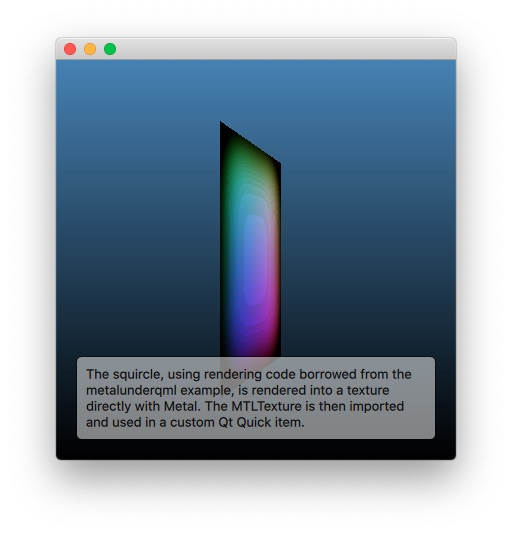

Scene Graph - Metal Texture Import
Shows how to use a texture created directly with Metal.

The Metal Texture Import example shows how an application can import and use a MTLTexture in the Qt Quick scene. This provides an alternative to the underlay, overlay, or render node approaches when it comes to integrating native Metal rendering. In many cases going through a texture, and therefore "flattening" the 3D contents first, is the best option to integrate and mix custom 3D contents with the 2D UI elements provided by Qt Quick.
import MetalTextureImport 1.0 CustomTextureItem { id: renderer anchors.fill: parent anchors.margins: 10 SequentialAnimation on t { NumberAnimation { to: 1; duration: 2500; easing.type: Easing.InQuad } NumberAnimation { to: 0; duration: 2500; easing.type: Easing.OutQuad } loops: Animation.Infinite running: true }
The application exposes a custom QQuickItem subclass under ther name of CustomTextureItem. This is instantiated in QML. The value of the t property is animated as well.
class CustomTextureItem : public QQuickItem { Q_OBJECT Q_PROPERTY(qreal t READ t WRITE setT NOTIFY tChanged) QML_ELEMENT public: CustomTextureItem(); qreal t() const { return m_t; } void setT(qreal t); signals: void tChanged(); protected: QSGNode *updatePaintNode(QSGNode *, UpdatePaintNodeData *) override; void geometryChanged(const QRectF &newGeometry, const QRectF &oldGeometry) override; private slots: void invalidateSceneGraph(); private: void releaseResources() override; CustomTextureNode *m_node = nullptr; qreal m_t = 0; };
The implementation of our custom item involves overriding QQuickItem::updatePaintNode(), as well as functions and slots related to geometry changes and cleanup.
class CustomTextureNode : public QSGTextureProvider, public QSGSimpleTextureNode
{
Q_OBJECT
public:
CustomTextureNode(QQuickItem *item);
~CustomTextureNode();
QSGTexture *texture() const override;
void sync();
We also need a scenegraph node. Instead of deriving directly from QSGNode, we can use QSGSimpleTextureNode which gives us some of the functionality pre-implemented as a convenience.
QSGNode *CustomTextureItem::updatePaintNode(QSGNode *node, UpdatePaintNodeData *)
{
CustomTextureNode *n = static_cast<CustomTextureNode *>(node);
if (!n && (width() <= 0 || height() <= 0))
return nullptr;
if (!n) {
m_node = new CustomTextureNode(this);
n = m_node;
}
m_node->sync();
n->setTextureCoordinatesTransform(QSGSimpleTextureNode::NoTransform);
n->setFiltering(QSGTexture::Linear);
n->setRect(0, 0, width(), height());
window()->update(); // ensure getting to beforeRendering() at some point
return n;
}
The updatePaintNode() function of the item is called on the render thread (if there is one), with the main (gui) thread blocked. Here we create a new node if there has not yet been one, and update it. Accessing Qt objects living on the main thread is safe here, so sync() will calculate and copy the values it needs from QQuickItem or QQuickWindow.
CustomTextureNode::CustomTextureNode(QQuickItem *item)
: m_item(item)
{
m_window = m_item->window();
connect(m_window, &QQuickWindow::beforeRendering, this, &CustomTextureNode::render);
connect(m_window, &QQuickWindow::screenChanged, this, [this]() {
if (m_window->effectiveDevicePixelRatio() != m_dpr)
m_item->update();
});
The node does not merely rely on the typical QQuickItem - QSGNode update sequence, it connects to QQuickWindow::beforeRendering() as well. That is where the contents of the Metal texture will be updated by encoding a full render pass, targeting the texture, on the Qt Quicks scenegraph's command buffer. beforeRendering() is the right place for this, because the signal is emitted before Qt Quick starts to encode its own rendering commands. Choosing QQuickWindow::beforeRenderPassRecording() instead would be an error in this exanple.
void CustomTextureNode::sync()
{
m_dpr = m_window->effectiveDevicePixelRatio();
const QSize newSize = m_window->size() * m_dpr;
bool needsNew = false;
if (!texture())
needsNew = true;
if (newSize != m_size) {
needsNew = true;
m_size = newSize;
}
if (needsNew) {
delete texture();
[m_texture release];
QSGRendererInterface *rif = m_window->rendererInterface();
m_device = (id<MTLDevice>) rif->getResource(m_window, QSGRendererInterface::DeviceResource);
Q_ASSERT(m_device);
MTLTextureDescriptor *desc = [[MTLTextureDescriptor alloc] init];
desc.textureType = MTLTextureType2D;
desc.pixelFormat = MTLPixelFormatRGBA8Unorm;
desc.width = m_size.width();
desc.height = m_size.height();
desc.mipmapLevelCount = 1;
desc.resourceOptions = MTLResourceStorageModePrivate;
desc.storageMode = MTLStorageModePrivate;
desc.usage = MTLTextureUsageShaderRead | MTLTextureUsageRenderTarget;
m_texture = [m_device newTextureWithDescriptor: desc];
[desc release];
QSGTexture *wrapper = m_window->createTextureFromNativeObject(QQuickWindow::NativeObjectTexture,
&m_texture,
0,
m_size);
qDebug() << "Got QSGTexture wrapper" << wrapper << "for an MTLTexture of size" << m_size;
setTexture(wrapper);
}
m_t = float(static_cast<CustomTextureItem *>(m_item)->t());
After copying the values we need, sync() also performs some graphics resource initialization. The MTLDevice is queried from the scenegraph. Once a MTLTexture is available, a QSGTexture wrapping (not owning) it is created via QQuickWindow::createTextureFromNativeObject(). This function is a modern equivalent to QQuickWindow::createTextureFromId() that is not tied to OpenGL. Finally, the QSGTexture is associated with the underlying materials by calling the base class' setTexture() function.
void CustomTextureNode::render()
{
if (!m_initialized)
return;
// Render to m_texture.
MTLRenderPassDescriptor *renderpassdesc = [MTLRenderPassDescriptor renderPassDescriptor];
MTLClearColor c = MTLClearColorMake(0, 0, 0, 1);
renderpassdesc.colorAttachments[0].loadAction = MTLLoadActionClear;
renderpassdesc.colorAttachments[0].storeAction = MTLStoreActionStore;
renderpassdesc.colorAttachments[0].clearColor = c;
renderpassdesc.colorAttachments[0].texture = m_texture;
QSGRendererInterface *rif = m_window->rendererInterface();
id<MTLCommandBuffer> cb = (id<MTLCommandBuffer>) rif->getResource(m_window, QSGRendererInterface::CommandListResource);
Q_ASSERT(cb);
id<MTLRenderCommandEncoder> encoder = [cb renderCommandEncoderWithDescriptor: renderpassdesc];
const QQuickWindow::GraphicsStateInfo &stateInfo(m_window->graphicsStateInfo());
void *p = [m_ubuf[stateInfo.currentFrameSlot] contents];
memcpy(p, &m_t, 4);
MTLViewport vp;
vp.originX = 0;
vp.originY = 0;
vp.width = m_size.width();
vp.height = m_size.height();
vp.znear = 0;
vp.zfar = 1;
[encoder setViewport: vp];
[encoder setFragmentBuffer: m_ubuf[stateInfo.currentFrameSlot] offset: 0 atIndex: 0];
[encoder setVertexBuffer: m_vbuf offset: 0 atIndex: 1];
[encoder setRenderPipelineState: m_pipeline];
[encoder drawPrimitives: MTLPrimitiveTypeTriangleStrip vertexStart: 0 vertexCount: 4 instanceCount: 1 baseInstance: 0];
[encoder endEncoding];
}
render(), the slot connected to beforeRendering(), encodes the rendering commands using the buffers and pipeline state objects created in sync().